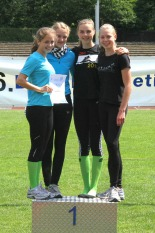

PAUKENSCHLAG BEIM BORSIG-MEETING: RLC-QUARTETT LÄUFT DM-QUALI

Beim Borsig-Meeting am 11.06.2011 in Gladbeck bewahrheitete sich die Prognose unseres Schülertrainers Jürgen Albers: "Die Mädels sind top drauf, da platzt bald der Knoten". Die 4 x100m-Staffel der weiblichen Jugend B in der Besetzung Ida Hartwig, Elena Hütter, Maren Albers (alle drei noch der Schülerinnenklasse angehörend) und Marita Schulte erlief sich in grandiosen 49,09 sec den 1. Platz und die Qualifikation zu den Deutschen Jugendmeisterschaften in Jena.